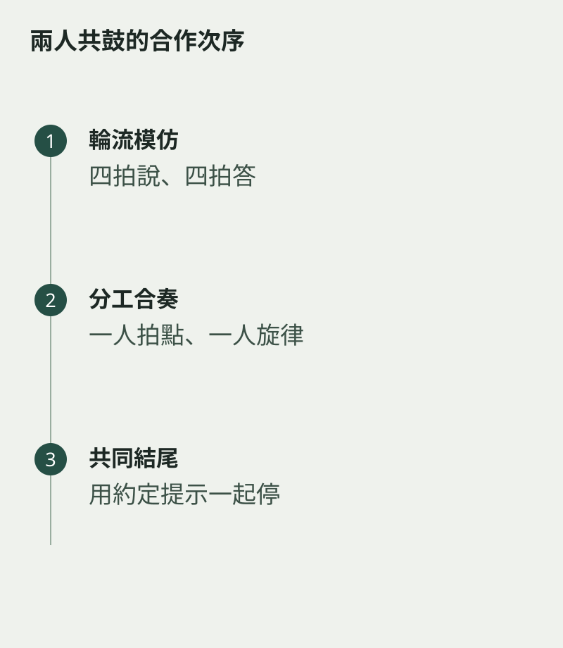

一面空靈鼓放在兩人中間，很容易變成誰想到甚麼就敲甚麼。想讓合奏有句子，可以先安排輪流，而不是立即同時演奏。有人敲一個短句，另一人聽完才回應，兩個角色都需要專注。
坐位要留足手部活動空間，鼓放穩，雙方都能舒服接觸到安排使用的音。不要為了搶到某個音交叉揮槌，先把音域與動作路線說清楚。
用四拍建立規則
第一人敲四拍，第二人也用四拍回答。開始可以完全模仿，等拍子穩定後，才改一個節奏或音高。輪流的空間越清楚，小朋友越容易知道自己何時需要聽、何時可以開始。
如果回答總提早進來，先把槌放低，口數完對方四拍才舉起。這是練等待的方法，不必用責備來處理。也可以由成人示範聽完後才回答的節奏。

同時演奏時減少內容
準備合奏後，一人只維持簡單拍點，另一人敲短旋律。伴奏不需要一直變，旋律也要留空間。兩人交換角色，便能體會保持穩定與自由回應各有難處。
結尾預先約定一個手勢或固定句子，讓兩人一起停下。合作的滿足感往往來自這個小小的共同結束：兩隻手不再各自忙碌，真的聽過對方之後，再把聲音放進同一段時間。